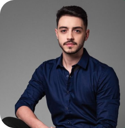
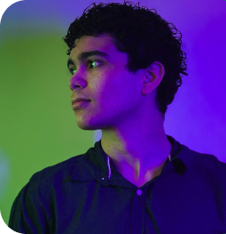

O reflorestamento é uma prática essencial para restaurar ecossistemas, combater as mudanças climáticas e promover a biodiversidade. No nosso compromisso com a recuperação e preservação do meio ambiente, reunimos uma equipe de especialistas apaixonados e dedicados ao reflorestamento. Cada um deles traz uma combinação única de conhecimento técnico, experiência prática e amor pela natureza. Conheça alguns dos nossos profissionais que estão na linha de frente da luta contra a degradação ambiental:
Dr. Rafael Almeida é engenheiro florestal com 5 anos de experiência em manejo sustentável e restauração ecológica, formado pela Universidade Federal de Minas Gerais. Ele é especialista em conservação da biodiversidade e já coordenou projetos de reflorestamento, além de ser coautor de publicações científicas na área e defensor da educação ambiental.
Dra. Ana Clara Martins é bióloga especializada em ecologia da conservação, formada pela UNICAMP, com 8 anos de experiência em preservação de espécies ameaçadas. Ela atua em projetos interdisciplinares e é conhecida por sua dedicação à educação ambiental, ministrando palestras e escrevendo artigos sobre conservação.
Marcos Oliveira é silvicultor com 15 anos de experiência na gestão de florestas comerciais e nativas, formado em Engenharia Florestal pela UFPR. Especializado em manejo sustentável e sistemas agroflorestais, ele trabalha para integrar produção agrícola com conservação ambiental e capacita pequenos produtores em práticas sustentáveis.
Pedro Henrique é produtor e editor de áudio e vídeo formado em Produção Audiovisual pelo SENAI, com 10 anos de experiência na criação e edição de conteúdos multimídia
Luara é designer especializada em Figma, formada em Design Gráfico pelo SENAI, com 5 anos de experiência em design de interfaces e protótipos interativos.
Luis é programador formado em linguagem de programação pelo SENAI, com 7 anos de experiência em desenvolvimento de software, focado em aplicações web e mobile
Lavínia é designer de marketing formada em Design Gráfico pelo SENAI, com 6 anos de experiência em branding e criação de campanhas visuais impactantes